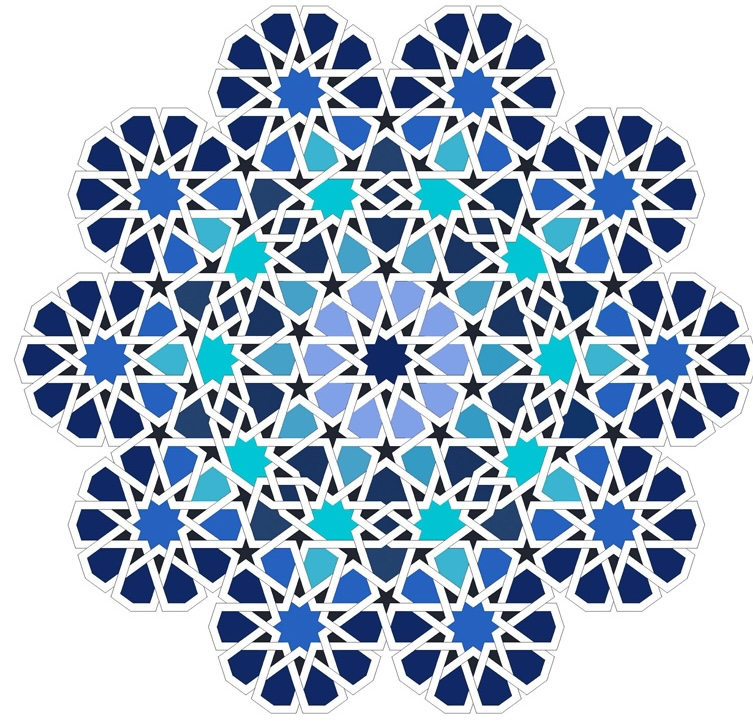

medallion-10 · iteration 69 (frozen) — live geometry
Rendered fresh from
iterations/69/pattern.bkr
via the bikar CLI · reference photo on the right · the white-lattice gap (render 34% white vs reference 55%) is what iter-70 targets
reference only off — show render only
zoom
1.0×
OUR RENDER — iter-69 (.bkr geometry)
REFERENCE PHOTO
